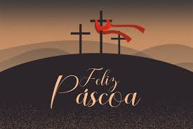

pascoa
→ O que é a Páscoa?
No cristianismo, a Páscoa ou Domingo da Ressurreição é uma festividade religiosa e um feriado que celebra a ressurreição de Jesus ocorrida no terceiro dia após sua crucificação no C
A data da Páscoa determina todas as demais datas das festas móveis cristãs, exceto as relacionadas ao Advento. O domingo de Páscoa marca o ápice da Paixão de Cristo e é precedido pela Quaresma[1], um período de quarenta dias de jejum, orações e penitências.
Origem da palavra
O termo Páscoa deriva, através do latim Pascha e do grego bíblico Πάσχα Paskha, do hebraico פֶּסַח (Pesaḥ ou Pesach), a Páscoa judaica.
Quaresma
O termo quaresma é um período de 40 dias que antecede a Páscoa, começando na Quarta-feira de Cinzas e terminando no Domingo de Ramos. É um tempo de reflexão, penitên
cia e preparação espiritual para a celebração da ressurreição de Jesus.
A Páscoa é uma festa móvel, o que significa que sua data não é fixa em relação ao calendário civil. O Primeiro Concílio de Niceia (325) estabeleceu a data da Páscoa como sendo o primeiro domingo depois da lua cheia após o início do equinócio vernal (a chamada lua cheia pascal)
semana santa
.jpg)
♦segunda-feira Santa
♦terça-feira Santa
♦quarta-feira Santa
♦quinta-feira Santa
♦sexta-feira Santa
♦sábado Santo
♦domingo de Páscoa
A Semana Santa é uma tradição religiosa cristã que celebra a paixão, a morte e a ressurreição de Jesus.Ela se inicia no Domingo de Ramos, que relembra a entrada triunfal de Jesus em Jerusalém e termina com a ressurreição de Jesus, que ocorre no domingo de Páscoa.
→Domingo de Ramos
O Domingo de Ramos abre solenemente a Semana Santa, com a entrada triunfal de Jesus em Jerusalém.
Jesus é recebido em Jerusalém como um rei, mas os mesmos que o receberam com festa o condenaram à morte. Jesus é recebido com ramos de palmeiras
→Segunda-Feira Santa
•artigo principal:Segunda-feira Santa É o segundo dia da Semana Santa, seguinte ao Domingo de Ramos, no qual se recorda a prisão de Jesus Cristo.
→Terça-Feira Santa
•artigo principal:Terca-feira Santa É o terceiro dia da Semana Santa, onde são celebradas as Sete dores de Nossa Senhora Virgem Maria. E muito comum também por ser o dia de penitência no qual os cristãos cumprem promessas de vários tipos ou o dia da memória do encontro de Jesus e Maria no caminho do Calvário.
→Quarta-Feira Santa
•artigo principal:Quarta-feira Santa É o quarto dia da Semana Santa, onde se recorda a traição de Judas Iscariotes, que entregou Jesus aos sacerdotes e escribas por trinta moedas de prata. É também o dia em que se celebra a missa do Crisma, onde são abençoados os óleos que serão usados nos sacramentos durante o ano.
→Quinta-Feira Santa
•artigo principal:quinta-feira Santa É o quinto dia da Semana Santa e, na manhã deste dia, nas catedrais das dioceses, o bispo se reúne com o seu clero para celebrar a Celebração do Crisma, na qual são abençoados os santos óleos que serão usados na administração dos sacramentos do Batismo, Ordenação de Padres e Bispos, Crisma e Unção dos Enfermos.
→Sexta-Feira Santa
•artigo principal:sexta-feira Santa É o sexto dia da Semana Santa,onde se recorda a crucificação e morte de Jesus Cristo. É um dia de luto e reflexão, onde os cristãos são convidados a meditar sobre o sacrifício de Jesus na cruz.
→Sábado Santo
•artigo principal:Sabado Santo É o sétimo dia da Semana Santa,onde se recorda o sepultamento de Jesus e a espera pela sua ressurreição.É um dia de silêncio e reflexão, onde os cristãos são convidados a meditar sobre a morte de Jesus e a esperança da ressurreição.
→Domingo de Páscoa
•artigo principal:Domingo de Pascoa É o oitavo dia da Semana Santa, onde se celebra a ressurreição de Jesus Cristo. É um dia de alegria e celebração, onde os cristãos são convidados a celebrar a vitória de Jesus sobre a morte e o pecado.
O Domingo de Páscoa é o dia mais importante do calendário cristão, pois celebra a ressurreição de Jesus Cristo, que é a base da fé cristã. É um dia de alegria e celebração, onde os cristãos são convidados a celebrar a vitória de Jesus sobre a morte e o pecado.
